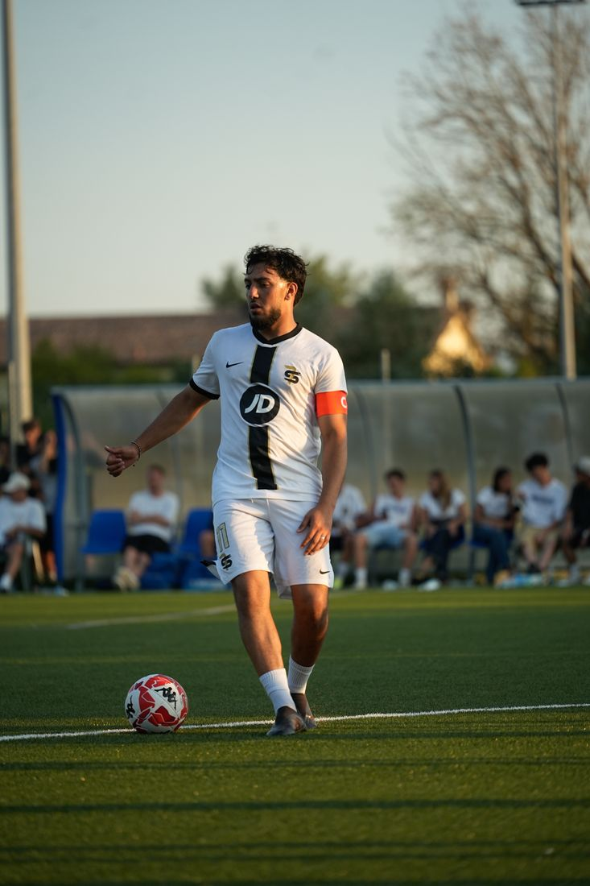

IL MIO PERCORSO
Una linea del tempo dei progetti principali pubblicati in portfolio finora, raccontata per capitoli più che per date: si aggiorna ogni volta che parte qualcosa di nuovo.
Il campo come punto di partenza
Ritratti e azione individuale: con Kings League (ALPAK FC) il lavoro è imparare a leggere il gioco in anticipo, per essere pronti a scattare un attimo prima che succeda qualcosa.
Dentro il gruppo
Da qui il racconto si allarga dal singolo atleta alla squadra: 7 Sins nasce come content squadra per il calcio sociale, mentre Win or Go Home porta lo stesso ritmo nei contenuti per Contropiede PB.
Stagioni intere, non solo singole giornate
Cuore Biancorosso (SSC Bari) e T'immagini (Ideale Bari Calcio) sono due diari di stagione: si seguono le squadre partita dopo partita, e sono tuttora "in aggiornamento".
Un salto fuori dallo sport
Oltre la transenna è il primo grande reportage da paparazzo: il matrimonio di Gianluigi Donnarumma, raccontato da fuori, tra transenne e folla — con un imprevisto d'eccezione, Erling Haaland tra gli invitati, diventato il contenuto più visto di sempre.
Il portfolio continua a crescere
Ogni progetto nuovo si aggiunge a questa pagina. Se hai in mente qualcosa da raccontare insieme, il capitolo successivo potrebbe essere il tuo.